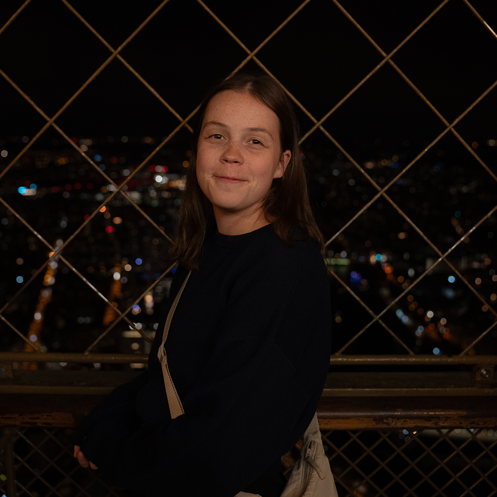

Linda Leitner
Persönliches
Name: Linda Karin Leitner
Geburtsdatum: 10.08.1998
Nationalität: Österreich/Schweden
Sprachen: Deutsch, Englisch, Schwedisch
Adresse: Moosfelderstraße 49/7, 4030 Linz
Telefon: +43 664 4358525
E-Mail: linda.leitner1@gmail.com

Berufserfahrung
2014 - 2017
Lehrausbildung zur Bürokauffrau bei „Husqvarna Austria GmbH“
2017 - 2023
Online Marketing & Social Media bei „Husqvarna Austria GmbH“
- Planung und Umsetzung von Social-Media-Kampagnen
- Pflege und Optimierung der Unternehmenswebseiten
- Content Creation: Texte, Bilder und Videos
- Monitoring & Reporting der Online-Aktivitäten
Ausbildung
2019 - 2021
Diplomierte Fachwirtin Medieninformatik und Mediendesign
2021 - 2023
Berufsreifeprüfung
2023 - aktuell
Studium Medientechnik & -design an der FH Oberösterreich, Campus Hagenberg
2025 (aktuell)
Auslandssemester an der Karlstad Universitet in Schweden
Kenntnisse
Tools & Software
- Adobe Lightroom
- InDesign
- Premiere
- After Effects
- Photoshop
- Illustrator
- DaVinci Resolve
- Figma
- WordPress
Webtechnologien
- HTML
- CSS
- JavaScript
Grundlagen in
- React und Vue.js
- Laravel
- Node.js
- PHP & MySQL
- MariaDB
Digitale Kompetenzen
- Social Media Management
- Content Creation
- SEO-Grundlagen
Kreative Skills
- Fotografie
- Videografie
- Blender Basics
- Unity Basics
Persönliche Stärken
- Teamfähigkeit / Zusammenarbeit
- Selbstständigkeit & Genauigkeit
- Zielstrebigkeit / Ergebnisorientierung
- Kreativität